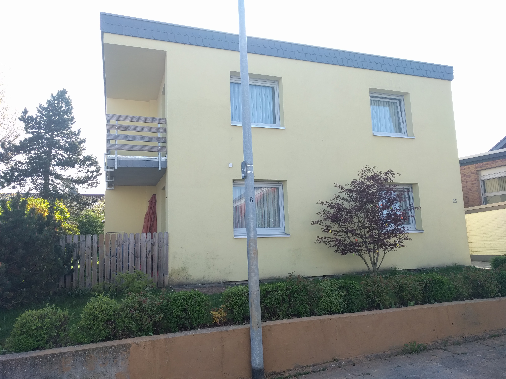
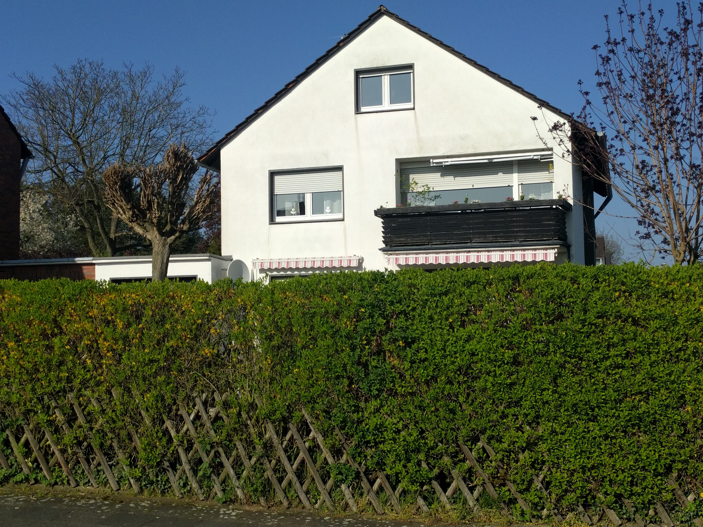
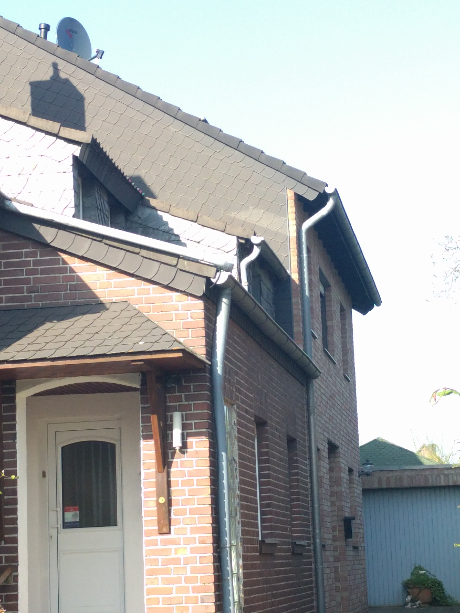
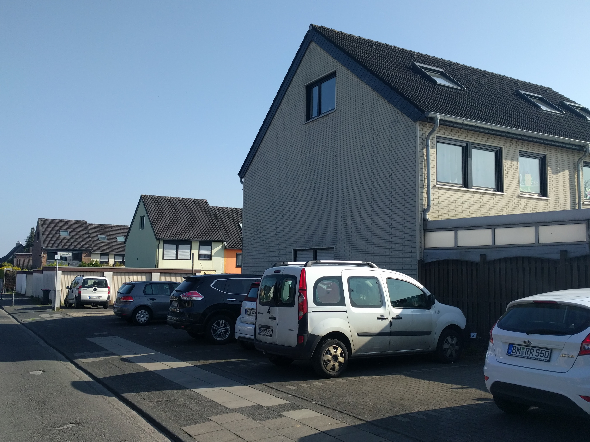

Die Fotos aus der näheren Umgebung sollen einen Eindruck der vorhandenen Bebauung vermitteln.
Grundstück Bergstr.
Die aufgenommenen Objekte des Karrees (Bergstr. | Auf der Höhe | Potsdame Str. | Brunostr.), sowie der Zufahrt Bergstr. und benachbartes Hollandviertel (L) verfügen über zwei Normalgeschosse. Umliegende Karrees weisen ebenfalls Bebauung mit zwei Normalgeschossen vor.








